Контейнеры, аллокаторы и адаптеры
Теория, примеры и иллюстрации по теме.
STL. Итераторы и основные алгоритмы - II
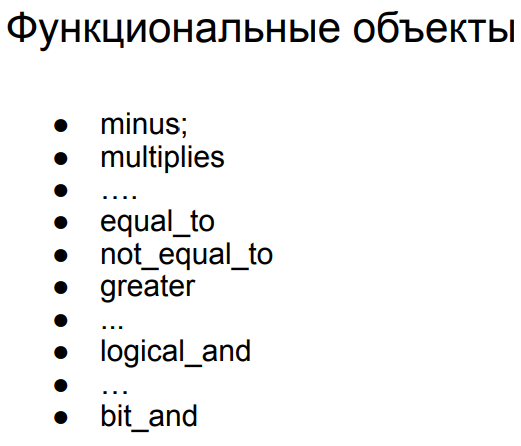
Named Requirements - это минимальные требования чтобы контейнер можно было назвать им
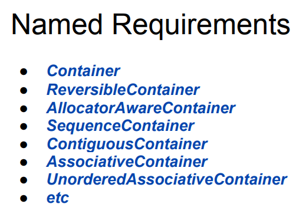
Последовательные массивы
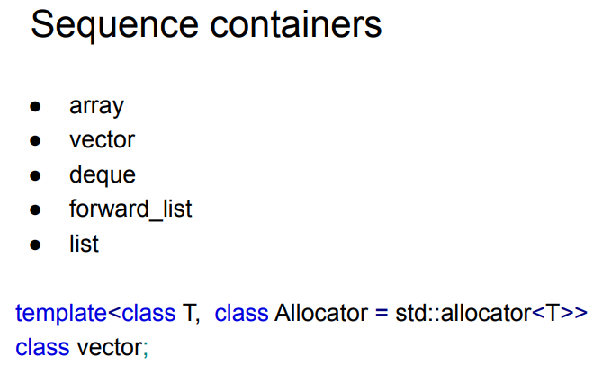
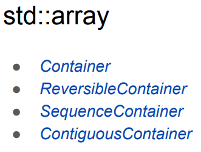
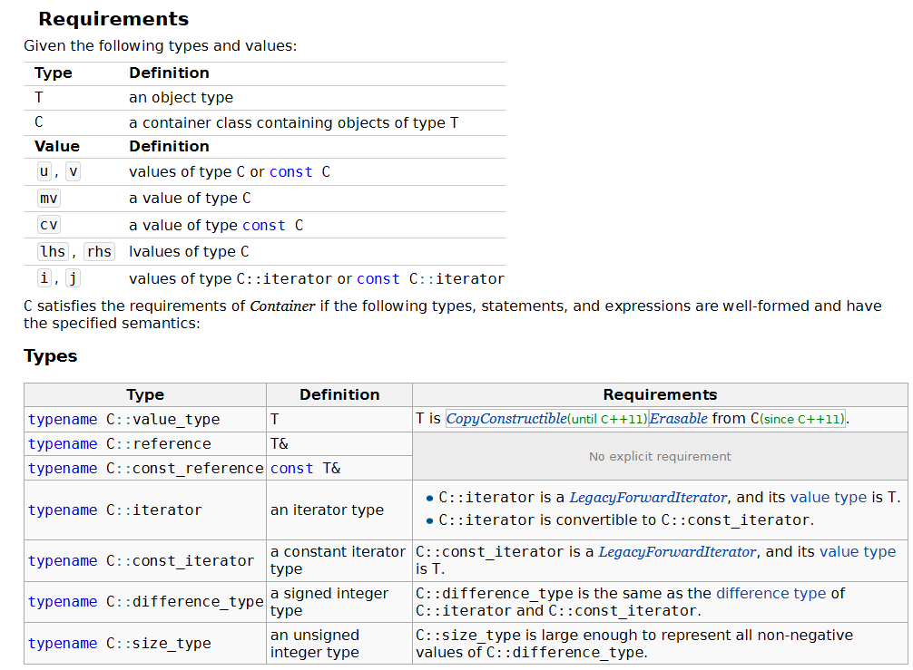
Требования чтобы удовлетворять STL контейнеру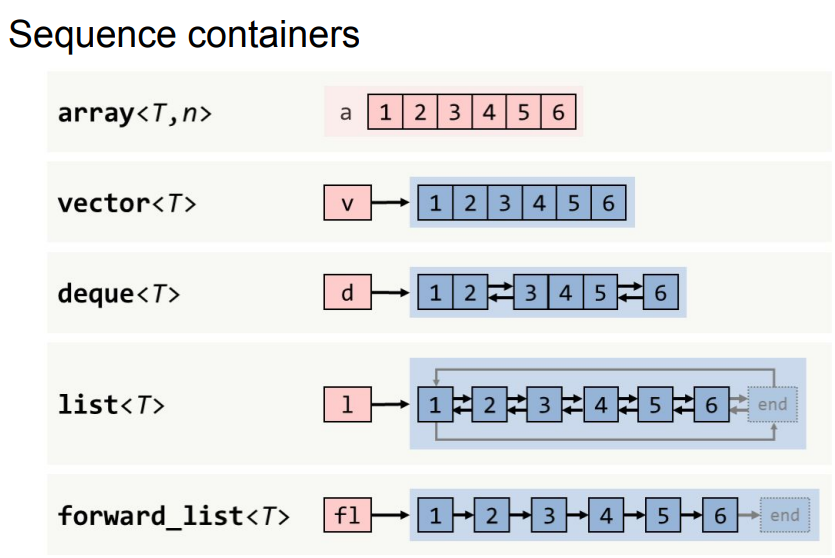
На деревьях
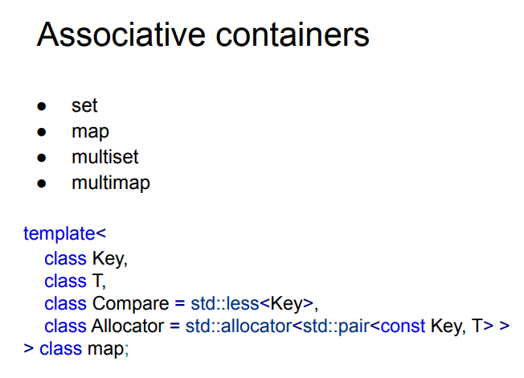
На хеш-таблицах
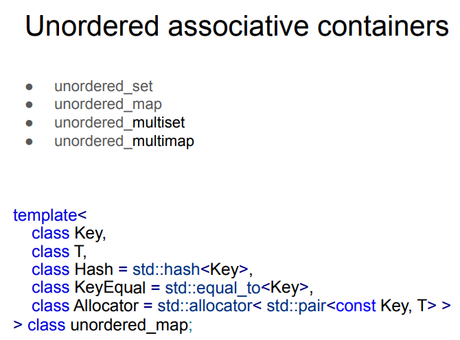
Поломка итератора
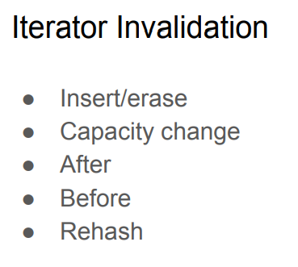
Allocator
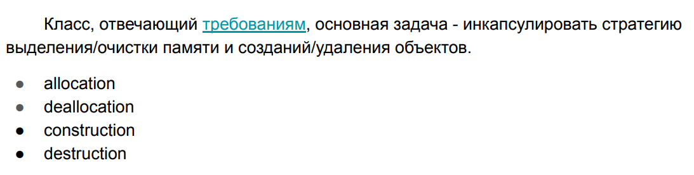
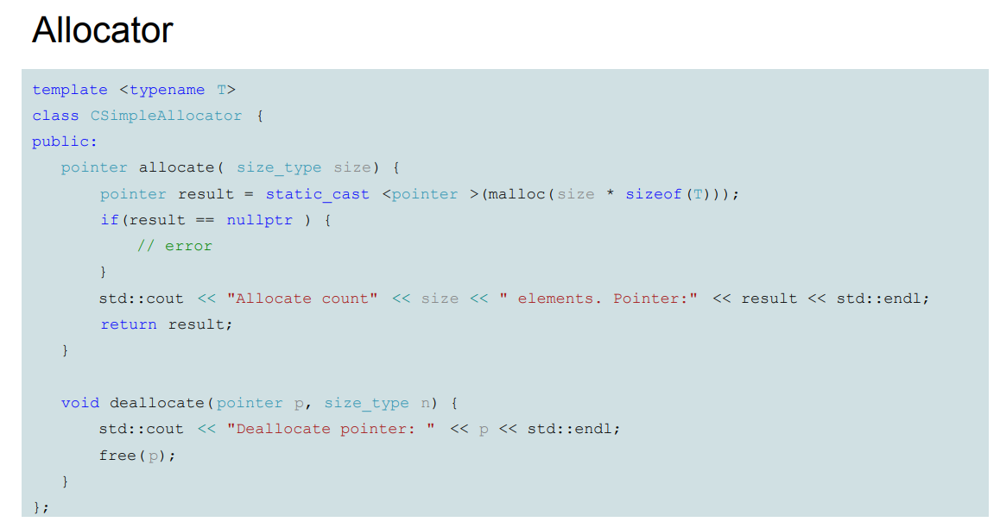
Аллокатор — это объект, который выделяет и освобождает память для объектов. Например, контейнеры STL используют его внутри:
std::vectorstd::liststd::map
Он делает две основные вещи:
- allocate() — выделяет память
- deallocate() — освобождает память
int main() {
std::allocator<int> alloc;
int* ptr = alloc.allocate(5);
alloc.construct(&ptr[0], 10);
alloc.construct(&ptr[1], 20);
std::cout << ptr[0];
alloc.deallocate(ptr, 5);
}Адаптеры контейнеров
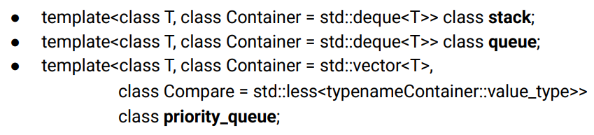
Адаптеры итераторов
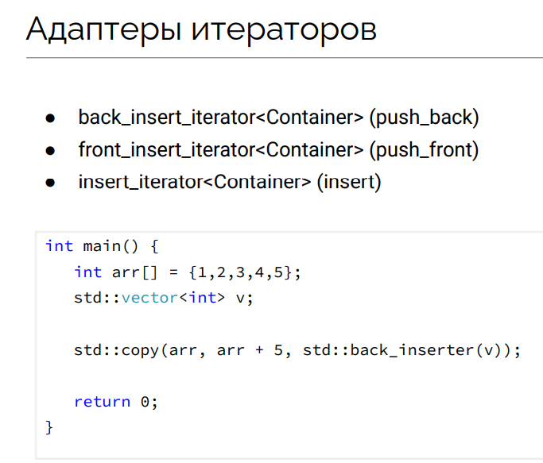
Потоковые итераторы
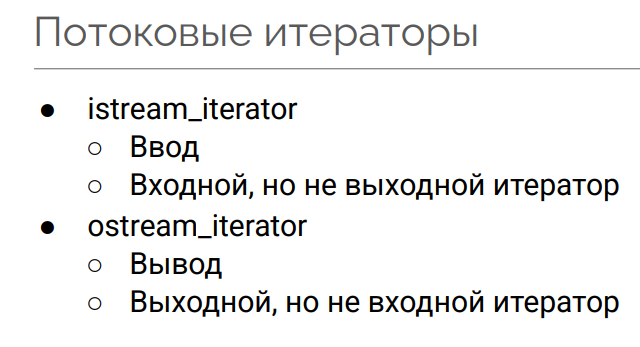
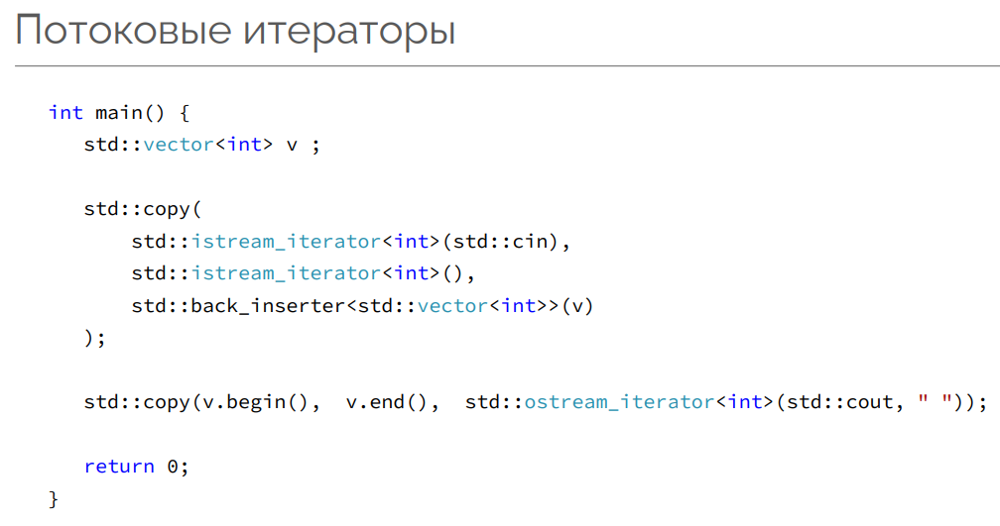
Tag Dispatch Idiom
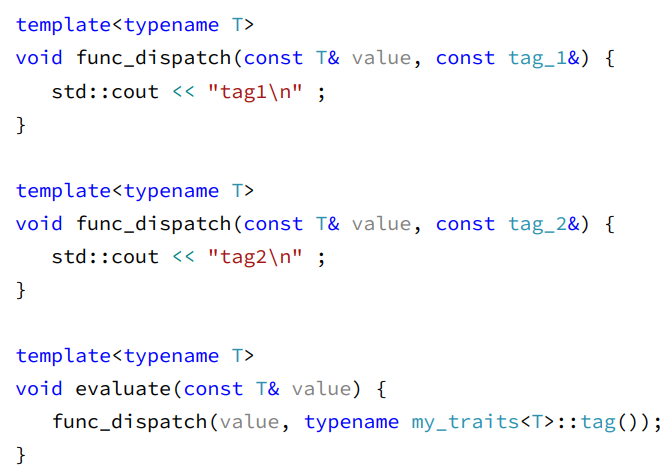
iterator_traits - признаки оператора
std::iterator_traits в C++ — это шаблонный класс-«traits» (свойство), используемый для получения информации об итераторах (тип значения, категория итератора и т.д.) внутри обобщенных алгоритмов.
Iterator Operation
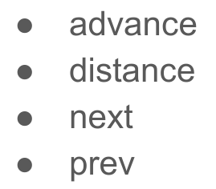
advence - сдвинуть итератор на n ячеек вперед distance - разность итераторов next - след prev - пред